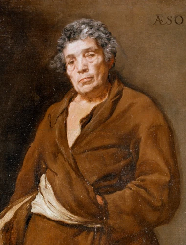

Ezop
(620 – 564 př. n. l.)

- považován za zakladatele řecké bajky
- tvořil v archaickém období řecké literatury
- o jeho životě mnoho nevíme
- dle legendy byl Ezop otrokem a jeho pán mu udělil svobodu poté, co mu pomohl vymanit se z hloupé sázky
- jakmile byl Ezop svobodný, začal hodně cestovat
- jeho dílo se šířilo zejména ústním podáním
- nejstaří dochovaný zápis Ezopových bajek pochází až z 4.–3. století
- v jednotlivých bajkách zvířata vystupují jako lidé
- Osel a chrobák, Lev a myš, Volba krále zvířat, O lišce a hroznech